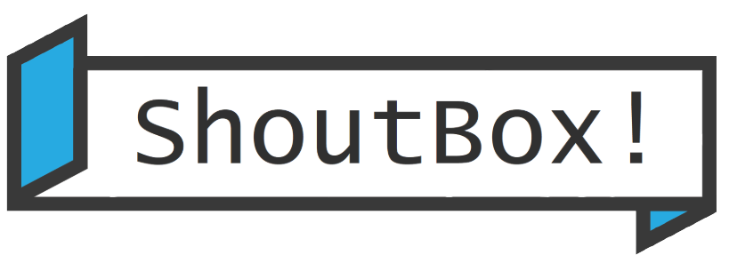

<mat-toolbar class="shadow">
  <button mat-icon-button (click)="drawer.toggle()">
    <mat-icon>menu</mat-icon>
  </button>
  <a routerLink="/home">
    
  </a>
  <button mat-icon-button class="ml-auto">
    <mat-icon>more_vert</mat-icon>
  </button>
</mat-toolbar>
<mat-drawer-container>
  <mat-drawer #drawer mode="side"><app-navbar></app-navbar></mat-drawer>
  <mat-drawer-content class="d-flex pt-3">
    <div class="col-md-8 col-sm-12">
      <router-outlet></router-outlet>
    </div>
    <app-aside class="col-4 d-none d-md-block fixed-top"></app-aside>
    <button (click)="openDialog()" class="bg create-shout" mat-fab>
      <mat-icon>edit</mat-icon>
    </button>
  </mat-drawer-content>
</mat-drawer-container>
